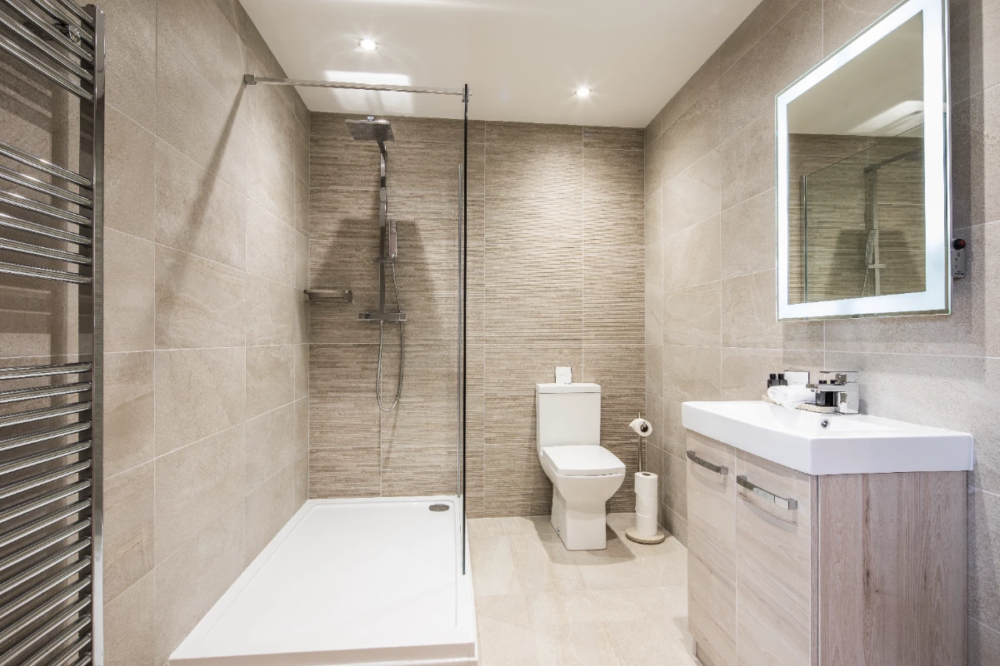

Badrumsrenovering i Solna
Ett rum att börja och avsluta dagen i.
Vi hjälper dig med badrumsrenovering i Solna. Hör av dig så går vi igenom platsen och förutsättningarna för ditt projekt.
Offertförfrågan
Genomtänkt.
Hela vägen.
Vi planerar och genomför badrumsrenoveringar med fokus på funktion, material och hållbarhet. Från rivning och installationer till plattsättning och inredning samordnas arbetet för att skapa en genomtänkt helhet.
Vi planerar arbetet tillsammans, håller dig informerad och följer upp resultatet. Materialval, tid, kostnad och garantivillkor går vi igenom för ditt uppdrag.

Frågor om
badrumsrenovering.
Vilka moment behöver planeras?
Utformning, rivning, underlag, installationer, ytskikt, inredning och slutlig kontroll.
Hur lång är byggtiden?
Det beror på badrummets storlek, förutsättningar och val. Tidsplanen tas fram före start.
Hur får jag ett pris?
Vi bedömer projektet och lämnar en offert utifrån omfattning och material.
Kan arbetet ge ROT-avdrag?
Vissa arbetskostnader kan omfattas om villkoren är uppfyllda. Se vår uppdaterade ROT-guide och Skatteverkets regler.
Vad ska jag tänka på vid materialval?
Fukttålighet, rengöring, livslängd och önskat uttryck. Vi hjälper dig att jämföra alternativen.